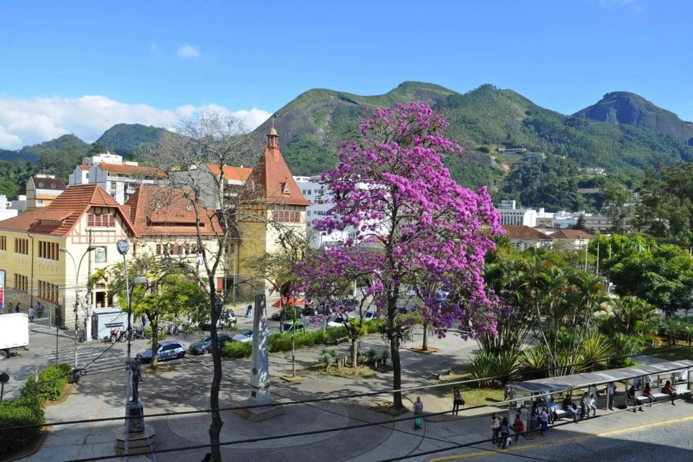
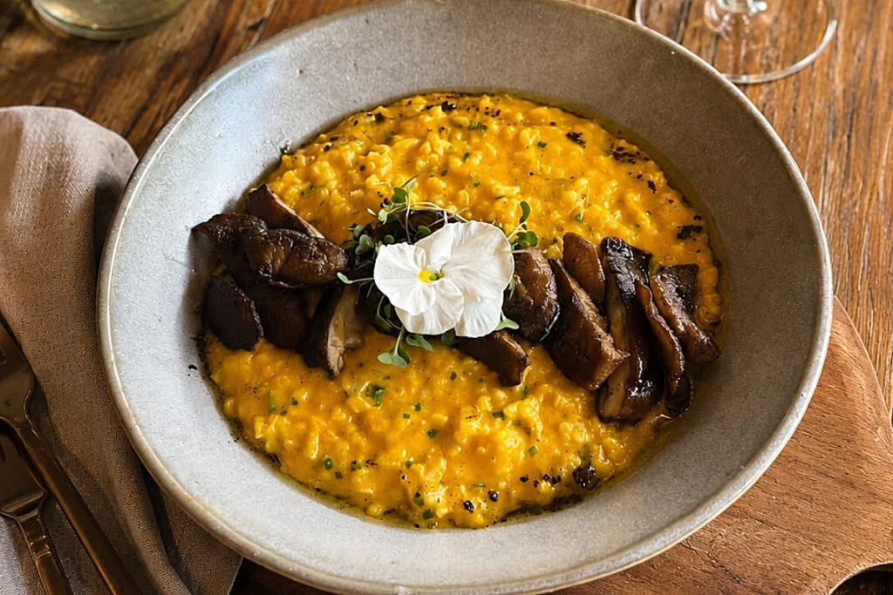

Home
O Refúgio Perfeito entre as Montanhas
Viva a experiência inesquecível de explorar Nova Friburgo! Localizada no coração da Serra Fluminense e emoldurada pela exuberante Mata Atlântica, a cidade combina o clima ameno de montanha com uma hospitalidade acolhedora. Seja para um final de semana romântico ou uma viagem em família, nossas charmosas pousadas, hotéis de charme e resorts oferecem o descanso ideal longe da rotina urbana. Inspire ar puro e conecte-se com a tranquilidade da natureza.

Aventuras, Gastronomia e Tradição
Encante-se com a rica herança cultural deixada pelos colonos suíços e alemães, presente na arquitetura e na culinária local. A aventure-se em trilhas deslumbrantes como o Pico da Caledônia e o Parque Estadual dos Três Picos, ou relaxe nos distritos de Lumiar e São Pedro da Serra. Para completar a visita, saboreie o melhor do circuito gastronômico com fondues, cervejas artesanais, queijos finos e explore o maior polo de moda íntima do país.
